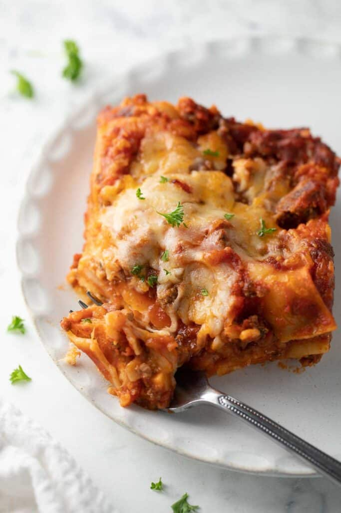
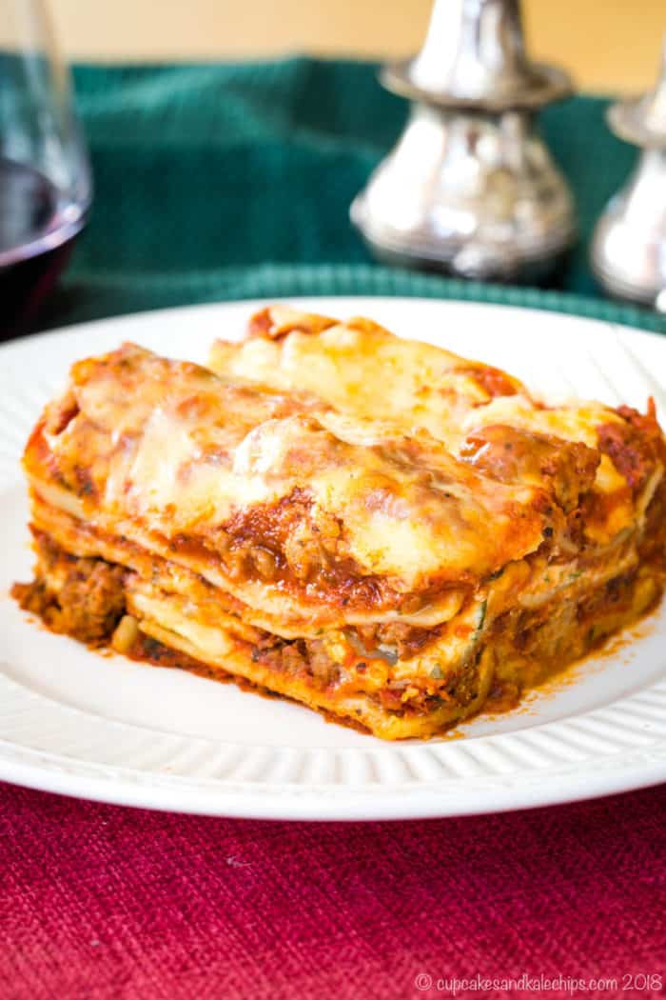
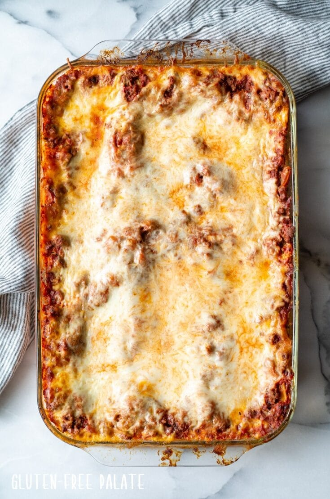
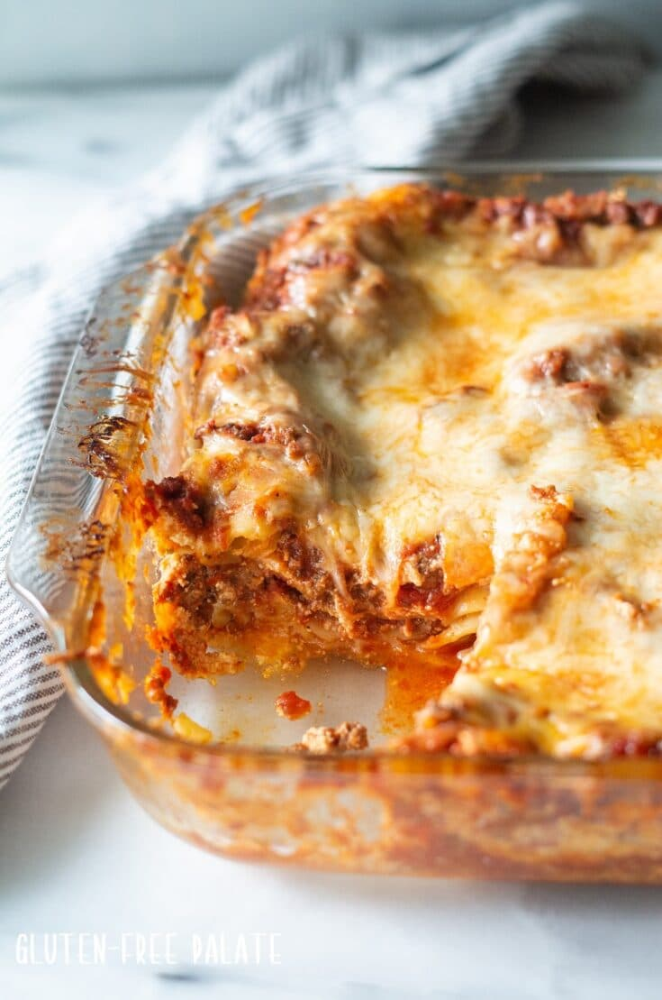

Gluten Free Lasagna
PREP TIME: 45 min
COOK TIME: 1 hour
SERVES: 12
CALORIES PER SERVING: Does it matter?

Description
A warm, bubbly lasagna layered with cheese and Bolognese sauce is surely comfort food at it’s finest.
It’s easy-to-make and the combination of cheeses and sauces creates a delicious, flavorful gluten-free lasagna.
Once you find gluten-free lasagna sheets, the rest of the ingredients are classic and easy-to-find. (Our favorite brand is Barilla)
The combination of jarred and canned sauces is the main trick for this recipe and the cottage cheese mixed with the Ricotta ensures the mixture stays moist and distinct.

Ingredients
- 1 16oz bag of shredded mozzarella cheese, low-moisture
- 8 oz ricotta cheese
- 8 oz cottage cheese, small curd
- ½ cup grated parmesan cheese
- 2 eggs
- 1 teaspoon dried parsley
- ½ teaspoon pepper
- 10 oz Barilla, Gluten-Free Oven Ready Lasagna Noodles
For the Sauce...
- 1 lb ground beef
- ½ white onion, finely diced
- 29 oz can Hunt's Tomato Sauce, or another canned tomato sauce
- 24-28 oz bottle jarred tomato basil pasta sauce

Instructions
- Preheat the oven to 425F.
- Set aside 1 cup of the mozzarella cheese for topping the lasagna later.
- In a medium bowl, mix together the remaining mozzarella and rest of the cheese mixture ingredients until combined.
- In a large skillet over medium-high heat, add the ground beef and onion. Brown the ground beef, breaking into very small chunks as you do.
- Drain the meat of any excess grease and return to the pan.
- Add the sauces and mix until heated through.
- Spoon a thin layer of sauce onto the bottom of a 9×13 inch baking dish.
- Using 5 noodles for the first layer – dip a noodle in the sauce and spread the top of the noodle with a layer of sauce.
- Place in the pan.
- Repeat with the remaining noodles.
- Follow the Lasagna Assembly instructions
- Cover the dish tightly with aluminum foil.
- Bake for 40 minutes covered.
- Remove the foil and top with the reserved mozzarella cheese.
- Bake for another 15-20 minutes until browned and bubbling.
- Let the lasagna sit for 20 minutes before serving.
- Slice and enjoy!
Lasagna Assembly
PRO TIP: Dipping/covering each individual noodle with sauce ensures the noodles will cook through.
- Add half of the cheese mixture in dollops across the top of the noodle/sauce layer. Spread with a small spatula until smooth.
- Spread a few small spoonfuls of sauce over the cheese layer.
- Dip/cover another 5 noodles and lay them on top of the cheese mixture.
- Add the other half of the cheese mixture in dollops across the top of the noodle/sauce layer. Spread with a small spatula until smooth
- Spread a few small spoonfuls of sauce over the cheese layer.
- Dip/cover the remaining noodles in sauce and and lay them on top. Spread any remaining sauce over top of the lasagna.
